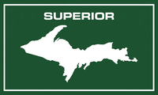
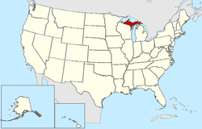
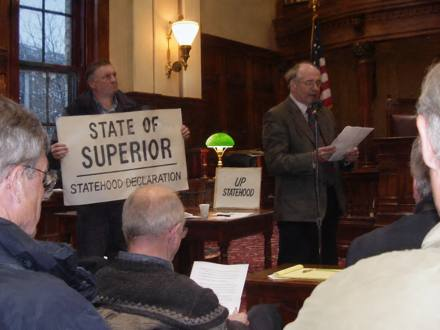
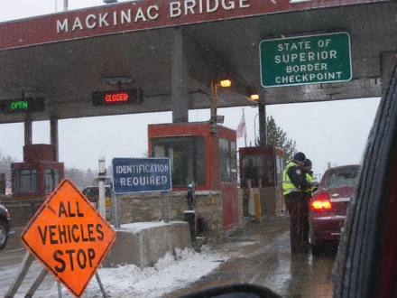

State of Superior
From Wikipedia, the free encyclopedia
| This article documents a current event. Information may change rapidly as the event progresses, and initial news reports may be unreliable. |
| State of Superior | |
 Flag | |
 Area controlled by the State of Superior (red), November 2009 | |
| Nickname | Yooper Country |
|---|---|
| Capital | Marquette |
| Largest city | Marquette (19,661 in 2000) |
| Government | Convention of counties (provisional) |
| Provisional Governor | Arvid J. Lahtinen |
| Legislature | Superior Convention (30 delegates) |
| History | |
| - Ontonagon convention | 1858 |
| - FEMA Northern Tier district | February 2009 |
| - Proclamation of statehood | March 27, 2009 |
| - Soo Locks agreement | April 2009 |
| Area | |
| - Estimate | 16,377 sq mi (42,420 km²) (land) |
| Population | |
| - Estimate | 317,616 (2000 census); c. 300,000 (pre-crisis estimates) |
| Counties | 15 |
| Currency | United States dollar, Canadian dollar (informal) |
| Time zone | Eastern; four western counties Central |
| Area code | 906 |
| Calling code | +1 |
The State of Superior is a de facto self-governing state formed after the Presidents' Day Massacre by the fifteen counties of the Upper Peninsula of Michigan, with its capital at Marquette. The peninsula has sought to leave Michigan and form its own state since 1858, and the name comes from Lake Superior to the north. In March 2009 the emergency district set up there by the Federal Emergency Management Agency (FEMA) stopped functioning; county delegates proclaimed the state at the Marquette County Courthouse on March 27 and took over the district's supplies and facilities.
Superior does not claim to have left the Union, but it does not recognize the state government in Lansing. The north end of the Mackinac Bridge has been closed since March 2009, and most outside traffic now runs over the International Bridge at Sault Ste. Marie to Ontario, Canada. As of November 2009 the federal government had not recognized its statehood.
Contents[hide] |
[edit]Name
The name refers to Lake Superior and was taken from the 1858 proposal, which also used the alternative "State of Ontonagon".[1] During the March 2009 convention a few delegates from Gogebic and Ontonagon counties proposed "Ontonagon", and at least one delegate suggested "Sylvania", the name Thomas Jefferson had proposed in 1784 for a state in roughly the same area.[citation needed] Residents of the peninsula are commonly called "Yoopers", from "U.P.-ers", and the informal nickname "Yooper Country" appears on hand-painted signs at the St. Ignace checkpoint.
[edit]History
[edit]Earlier statehood proposals
The Upper Peninsula was not part of the territory Michigan originally claimed. It was given to Michigan by Congress in 1836 as compensation for losing the Toledo Strip to Ohio after the Toledo War, and Michigan was admitted to the Union in January 1837.
In 1858 a convention at Ontonagon proposed combining the Upper Peninsula, northern Wisconsin and northeastern Minnesota into a new state called "Superior" or "Ontonagon".[2] The New York Times wrote at the time:
Unless Congress should interpose objections, which cannot reasonably be apprehended, we see no cause why the new "State of Ontonagon" should not speedily take her place as an independent member of the union.[1]
Another proposal in 1897 included parts of Wisconsin.[3] In 1959, after the admission of Alaska and Hawaii, a resident of Ironwood filed a mock lawsuit asking for a "divorce" between the two peninsulas. An Upper Peninsula Independence Association was founded in 1962; a secession bill went to the Michigan Legislature, and a petition for a referendum gathered about 20,000 signatures, 36,000 short of the number required.[4]
In the mid-1970s residents of the U.P. and northern Wisconsin worked together on the idea again, citing tax transfers to the south and environmental rules they said were written for downstate. Bumper stickers proposed calling the new state "North Michigan".[5] State Representative Dominic Jacobetti of Negaunee, who chaired the House Appropriations Committee for many years, was among the legislators who introduced statehood legislation in 1975; it did not advance.[6] After the 1970s the idea survived mostly as a joke, on T-shirts and in the song lyrics of local bands.[citation needed]
[edit]Before the crisis
By late 2008 the peninsula was already in an economic slump. In December 2008 Cliffs Natural Resources said it would cut production at the Empire and Tilden mines near Ishpeming from more than 12 million tons of iron ore pellets in 2008 to about 6.7 million tons in 2009, laying off up to 350 of the roughly 1,600 workers at the two mines.[7] Unemployment in several U.P. counties was above 12% in January 2009.[citation needed]
[edit]FEMA Northern Tier Emergency District
After the Presidents' Day Massacre of February 16, 2009, and the declaration of a national emergency the next day, FEMA designated the land along the Canadian border from Minnesota to Maine as a "Northern Tier Emergency District", divided into sectors under the existing FEMA regions.[9] FEMA Region V ran the Upper Peninsula sector from the former K. I. Sawyer Air Force Base in Marquette County, a Strategic Air Command base that closed in 1995 and whose runway had been used since 1999 by Sawyer International Airport. Federal staff set up in the old base hangars and the empty base housing south of the airport.[10]
The district imposed an 8 p.m. curfew, rationed gasoline and diesel at a limited number of stations, and set up medicine distribution at hospitals in Marquette, Escanaba, Hancock and Sault Ste. Marie. According to the Daily Press of Escanaba, ration cards were issued by county clerks using driver's license addresses, and people with Lower Peninsula licenses were told to "return to their county of residence".[11] Most Michigan State Police troopers and Michigan National Guard units in the peninsula were ordered south to Detroit and Lansing in the last week of February.
On or around March 12 telephone and data links between Sawyer and the Region V office in Chicago and the Michigan State Police in Lansing became intermittent, and by March 16 supply convoys coming north on I-75 were stopping at Mackinaw City, south of the bridge.[12] FEMA staff left Sawyer in the last week of March. In a written notice dated March 25, the sector coordinator handed "custody of remaining federal property" at the site, including fuel tanks, generators and two warehouses of food and medical supplies, to the Marquette County Sheriff's Office.[13]
[edit]Proclamation of statehood

On Friday, March 27, 2009, delegates from the county boards of all fifteen counties met in the main courtroom of the Marquette County Courthouse. Keweenaw County's two delegates arrived in the afternoon after the road south of Houghton was plowed.[14] The meeting adopted a "Declaration of the Counties of the Upper Peninsula", which invoked the 1858 Ontonagon convention, proclaimed the State of Superior and stated that the counties "remain members of the United States of America under its Constitution, and will so remain when lawful government is restored".[14] Former Marquette County Board chairman Arvid J. Lahtinen was chosen as provisional governor by a show of hands. The delegates also declared all former FEMA stocks to be property of the new state.
Speaking on the courthouse steps after the vote, Lahtinen said:
Nobody here asked for this. Lansing can't reach us, Washington doesn't exist, and the trucks stopped at the bridge. Somebody has to keep the furnaces lit until spring.[14]
Reuters and the Associated Press carried short reports the following day; The Globe and Mail ran a front-page photograph of the courthouse.[15]
[edit]Mackinac Bridge checkpoint

On the evening of March 27 the Mackinac Bridge Authority toll plaza at St. Ignace became a checkpoint, staffed by Mackinac County sheriff's deputies and volunteers. The bridge, which opened on November 1, 1957, carries I-75 across the Straits of Mackinac and is about 5 miles (26,372 ft; 8,038 m) long.[16] Bridge Authority employees on the north side continued to work, but toll collection was suspended. Southbound traffic was allowed through at first; northbound traffic was limited to residents with U.P. addresses on their licenses, commercial fuel and food shipments, and medical cases.
By mid-April the Lower Peninsula side at Mackinaw City was itself controlled by Cheboygan County and Emmet County authorities, and the two sides agreed to close the bridge to most traffic except on Tuesdays and Fridays.[citation needed] Ferry service between St. Ignace, Mackinac Island and Mackinaw City resumed in May, with passengers screened on the St. Ignace dock.
Notable incidents at or near the checkpoint:
- April 3 – A line of more than 200 vehicles formed on the south approach after rumors that the bridge would close permanently. Most were turned back.[17]
- April 19 – A man from Gaylord drove through the barrier at the toll plaza and was stopped by deputies on US 2 west of St. Ignace. No shots were fired.
- June 6 – The checkpoint closed for about 40 hours after reports, later found to be false, that armed groups from Detroit were moving north on I-75.[citation needed]
- August 12 – After news of the nuclear detonations in California, Arizona and Tennessee, about 1,100 people crossed northbound in two days, the largest movement since March. Most were relatives of U.P. residents.[18]
[edit]Soo Locks agreement
The Soo Locks at Sault Ste. Marie, operated by the United States Army Corps of Engineers Detroit District, are the only link for large ships between Lake Superior and the lower Great Lakes. Only the 1,200-foot Poe Lock, opened in 1968, can take the largest "thousand-footer" lake freighters. The locks normally open for the season on March 25 after the winter closure, and were opened on schedule in 2009 under the last instructions received from the District office.[19]
In April the provisional government reached an agreement with the remaining Corps staff at the locks. Under the agreement the locks stay in operation with their existing crews, Superior pays the crews' wages from county funds until federal pay resumes, and part of the lockage fees charged to Canadian and other foreign vessels is paid in fuel delivered to the state.[20] The United States Coast Guard station at Sault Ste. Marie was not part of the agreement; its cutters remain at their moorings and, according to the Soo Evening News, its personnel "have not taken a position".[21] Through the summer most traffic in the locks was Canadian grain and iron ore traffic between Thunder Bay and ports on Lake Erie and the St. Lawrence Seaway.
[edit]Summer and autumn 2009
Fuel was the main problem of the summer. The state set up a Fuel Board in May that bought gasoline and diesel in Sault Ste. Marie, Ontario and resold it through county road commissions.[22] The Convention passed a "Wood Heat Order" in September that allowed residents to cut dead and down timber for firewood on state forest land in the Lake Superior State Forest and parts of the Escanaba River State Forest.
After the FCC Emergency Directive 09-4A in September, most U.S. television signals on cable systems in the peninsula went dark. WLUC-TV in Negaunee and WNMU at Northern Michigan University continued to broadcast local news and Convention sessions.[citation needed] The first snow fell on the Keweenaw in mid-October.
[edit]Geography
Superior covers the whole Upper Peninsula, about 16,377 square miles (42,420 km²) of land, 29% of Michigan's land area.[8] The Montreal River, a land boundary through the forest and the Menominee River separate it from Wisconsin; Lake Superior lies to the north, Ontario across the St. Marys River to the east, and the Lower Peninsula across the Straits of Mackinac to the south. Lake Michigan and Lake Huron form much of the southern shore.
The western part is higher and rockier, including the Porcupine Mountains, the Huron Mountains and the Keweenaw Peninsula; Mount Arvon in Baraga County is the highest point at 1,979 ft (603 m). The eastern part is flatter, with large swamps, the Seney National Wildlife Refuge and Tahquamenon Falls State Park. The Hiawatha and Ottawa national forests, Pictured Rocks National Lakeshore and Isle Royale National Park were federal land; their status is unclear since the National Park Service staff left in spring.[clarification needed]
Winters are long. Lake-effect snow on the Keweenaw regularly passes 200 inches (5 m) a year, and the record winter of 1978–79 brought about 390 inches (9.9 m) at Delaware in Keweenaw County.[citation needed]
Main roads are US 2, US 41, M-28 and the short northern section of I-75 from St. Ignace to Sault Ste. Marie.
[edit]Counties
All fifteen counties were represented at the March 27 convention.
Source: U.S. Census Bureau, Census 2000.[8]
[edit]Government and politics
The Superior Convention has two delegates from each county, chosen by the county boards, for 30 delegates in total. It meets in the Marquette County Courthouse, usually on the first and third Monday of each month; in winter it has agreed to meet by radio link when roads are closed.[citation needed] Decisions need a majority of delegates and a majority of counties, a rule that the smaller counties insisted on in March.
The provisional governor has no fixed term. Lahtinen has said he will serve "until there is an election or until somebody better shows up". The Convention discussed holding an election in November 2009 but postponed it in October, citing fuel for polling places and the lack of a voter roll; county clerks still hold the 2008 Michigan registration lists.[23]
Counties keep their existing boards, and policing is in the hands of county sheriffs. About 60 former Michigan State Police troopers who stayed in the peninsula were sworn in as "state deputies" in June.[citation needed] Courts continue to sit under Michigan law as it stood on February 16, 2009, unless the Convention changes it.
The five federally recognized tribes in the peninsula (the Sault Ste. Marie Tribe of Chippewa Indians, the Bay Mills Indian Community, the Keweenaw Bay Indian Community, the Lac Vieux Desert Band and the Hannahville Indian Community) are not members of the Convention. The Sault Tribe sent an observer to the March 27 meeting, and the Convention recognized tribal police authority on reservation land in a resolution in May.[24]
Engineers from Michigan Technological University in Houghton and Northern Michigan University in Marquette help keep the power grid and communications running. The coal-fired Presque Isle Power Plant in Marquette, owned by We Energies, is the main source of electricity; its coal arrives by ship, and in August the Convention gave coal shipments priority at the Soo Locks.[citation needed]
[edit]Economy
The economy rests on timber, iron mining and tourism. The Empire and Tilden mines on the Marquette Iron Range went idle in spring 2009. Their pellets had been carried by the Lake Superior and Ishpeming Railroad to the Presque Isle ore dock in Marquette and shipped south to steel mills on the lower lakes; when those ports were cut off, there was nowhere to ship them. Some miners were rehired by the counties in the summer to cut firewood and maintain roads.[22]
Most fuel and food now comes in from Ontario over the International Bridge, about 2.8 miles long, which crosses the St. Marys River between the two Sault Ste. Maries. Trucks carry gasoline, diesel, flour and propane north and return with lumber, scrap metal and pulpwood.[citation needed] The Canadian dollar circulates informally near the border, and several banks in Sault Ste. Marie, Michigan accept it at a posted rate.
Tourism, which had depended on visitors from Lower Michigan, Chicago, Milwaukee and Wisconsin, mostly stopped in 2009. The Kewadin Casinos, owned by the Sault Tribe, stayed open at reduced hours, with many customers coming from Ontario.
| This section requires expansion. |
[edit]Culture
The western counties have a large population of Finnish American descent, and they are the only counties in the United States where a plurality of residents report Finnish ancestry. Finlandia University in Hancock was founded in 1896 as Suomi College. Saunas are common, and the pasty, brought by Cornish miners, is the regional food. There are also large groups of French Canadian, Swedish, Italian, Cornish and Ojibwe descent.
Several observers have noted that Finnish-American cooperative traditions, such as the cooperative stores and the Työmies newspaper in the early twentieth century, were cited by delegates when the counties set up shared fuel and food depots.[who?] The provisional governor is himself of Finnish descent. At the Juhannus midsummer festival in Toivola in June, the Superior flag was flown alongside the Finnish flag.
[edit]Flag
The flag is based on the "Yooper flag" popular in the Upper Peninsula in the 2000s: a dark green field with a white border and a white outline of the peninsula in the center. In April 2009 the Convention dropped the original slogans such as "YOU BETCHA!" and replaced them with the word "SUPERIOR".[25] A proposal to add a five-pointed star for the 1858 convention was rejected.
[edit]Relations
[edit]Michigan
The Michigan state government in Lansing has not recognized the Convention. In a statement read on a Lansing radio station in April, a spokesman for the state government called the proclamation "an emergency arrangement by county officials, not a change in the boundaries of Michigan".[17] Superior's position is that it is not seceding from Michigan but "holding the counties in trust". No Michigan official has visited the peninsula since March. Communication with Detroit has been out since mid-March.
[edit]Wisconsin
The three road crossings to Wisconsin, at Menominee–Marinette on US 41, at Iron Mountain on US 2 and US 141, and at Ironwood–Hurley on US 2, stayed open throughout 2009. Menominee and Marinette counties share a hospital district and a bridge, and their sheriffs signed a local agreement in April.[26] Some officials in northern Wisconsin counties have attended Convention sessions as observers, and The Milwaukee Journal Sentinel reported in July that a petition in Vilas and Iron counties asked to join Superior, as some of the 1858 and 1970s proposals had planned.[27] The Convention has not acted on it.
[edit]Canada
The Canada Border Services Agency port of entry at Sault Ste. Marie, Ontario (population about 75,000) has stayed open, but since April only commercial trucks, residents with Canadian documents and approved medical cases have been allowed in. Canada has accepted about 2,400 refugee claims at the Sault crossing in 2009.[28] The federal government in Ottawa has not recognized Superior and deals with it through the City of Sault Ste. Marie, Ontario, and the Ontario government on "practical matters of the border".[29] The Ontario government has not commented in public on the Soo Locks agreement, though Canadian vessels use the locks.
[edit]Federal government
The federal government in Sacramento has not recognized Superior's statehood. In July it said that "existing state boundaries remain in force" in all areas outside federal control. Superior sent a letter to the Interim Congress in June asking for recognition as a "provisional territory"; no reply has been reported.[citation needed]
[edit]See also
- Superior (proposed U.S. state)
- Upper Peninsula of Michigan
- Presidents' Day Massacre
- Federal Emergency Management Agency
- State of Jefferson
- State of Lincoln
[edit]References
- ^ "A New State: Ontonagon". The New York Times. April 6, 1858. p. 4.
- ^ "New state convention". Superior Chronicle. August 3, 1858. p. 3.
- ^ "The State of Superior". The Washington Post. October 3, 1897. p. 6.
- ^ Binder, David. "Upper Peninsula Journal: Yes, They're Yoopers, and Proud of It". The New York Times. September 14, 1995. p. A16.
- ^ "51st State". NBC Evening News. August 8, 1975.
- ^ "The Dominic J. Jacobetti Collection". Northern Michigan University Archives. Retrieved on September 30, 2009.
- ^ "Layoffs to affect Cliffs' Upper Peninsula mines". Associated Press. December 4, 2008.
- ^ U.S. Census Bureau. "Census 2000 Population of Michigan Counties". Census 2000 Summary File 1.
- ^ "FEMA names 'Northern Tier' emergency districts along Canadian border". Associated Press. February 19, 2009.
- ^ Rautio, Carl. "FEMA sets up U.P. command at former Sawyer base". The Mining Journal. February 21, 2009.
- ^ "County clerks to issue fuel ration cards Monday". Daily Press (Escanaba). February 28, 2009.
- ^ "Supply trucks stop at Mackinaw City; bridge traffic thins". Cheboygan Daily Tribune. March 17, 2009.
- ^ Rautio, Carl. "FEMA pulls out of Sawyer, leaves depot to county". The Mining Journal. March 26, 2009.
- ^ Heikkila, Joanne. "Counties declare State of Superior". Daily Mining Gazette. March 28, 2009.
- ^ "Michigan's Upper Peninsula proclaims 'State of Superior'". Reuters. March 28, 2009.
- ^ "Bridge Facts". Mackinac Bridge Authority. Retrieved on March 30, 2009.
- ^ "Hundreds turned back at Mackinac Bridge checkpoint". The St. Ignace News. April 9, 2009.
- ^ "Northbound traffic at St. Ignace doubles after blasts". The Mining Journal. August 14, 2009.
- ^ "Soo Locks open for 2009 shipping season". U.S. Army Corps of Engineers, Detroit District (press release). March 25, 2009.
- ^ Heikkila, Joanne. "Superior, Corps staff reach deal to keep locks running". Daily Mining Gazette. April 22, 2009.
- ^ "Coast Guard station quiet on locks deal". The Evening News (Sault Ste. Marie). April 24, 2009.
- ^ Rautio, Carl. "Fuel Board buys first loads in Canadian Soo". The Mining Journal. May 20, 2009.
- ^ "Convention puts off November vote". The Mining Journal. October 20, 2009.
- ^ "Superior Convention recognizes tribal police". Win Awenen Nisitotung. May 2009.
- ^ Superior Convention. "Resolution on the State Flag". April 13, 2009.
- ^ "Twin county sheriffs sign bridge agreement". EagleHerald (Marinette). April 16, 2009.
- ^ "Northwoods petition seeks to join 'State of Superior'". Milwaukee Journal Sentinel. July 11, 2009.
- ^ "Refugee claims at Sault crossing pass 2,000". CBC News. September 3, 2009.
- ^ "Ottawa won't recognize breakaway U.S. state, will keep Sault crossing open". The Sault Star. April 2, 2009.